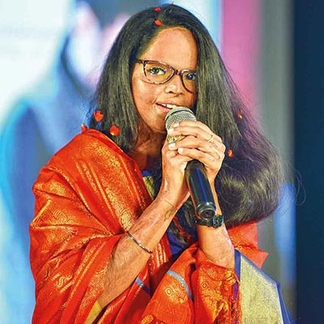

LAXMI AGARWALLaxmi Agarwal is an Indian acid attack survivor, activist, and a symbol of resilience and courage. Born on June 1, 1990, in New Delhi, India, Laxmi's life took a tragic turn when she was just 15 years old. In 2005, she was attacked by a man named Naeem Khan, who threw acid on her face while she was waiting at a bus stop. The attack left her with severe facial disfigurement and scars, but it couldn't break her spirit. |
THE ATTACK:Laxmi Agarwal, a 15-year-old 11th-grade student, was attacked with acid in 2005 by Naeem Khan, a man who had proposed to her and was rejected. Ten months later, while returning from a market, Laxmi was attacked by Naeem and his older brother Kamran, who called her name and threw acid on her face from a motorcycle. Laxmi fainted and faced multiple accidents while trying to seek help. Arun Singh, a passerby, took her to the hospital where the police were informed. Laxmi underwent several surgeries, including an eye surgery. Naeem Khan was initially arrested but later bailed out and got married. However, due to widespread protests and media attention, he was eventually sentenced to life imprisonment. |
|  | Laxmi's story gained national attention, and she emerged as a powerful voice for acid attack survivors. She refused to hide in the shadows and became an advocate for stricter laws against acid attacks. She filed a PIL (Public Interest Litigation) in the Supreme Court of India, seeking regulations on the sale of acid and better rehabilitation for survivors. Her efforts resulted in the landmark regulation of the sale of acid and recognition of acid attack survivors as victims under Indian law. |
Laxmi's journey as an activist has been remarkable. She has been instrumental in raising awareness about acid attacks and the physical and psychological trauma survivors face. She has spoken at various platforms, including international conferences, to shed light on the issue and advocate for change. Laxmi's courage and resilience have inspired many other survivors to come forward and seek justice.
In addition to her activism, Laxmi Agarwal is also a successful campaigner for positive body image. She has worked with organizations that promote self-acceptance and challenge societal beauty standards. Laxmi believes that true beauty lies in one's character and not in physical appearance.
Despite enduring a horrific acid attack at the age of 15, Laxmi displayed immense resilience and became an advocate for the rights of acid attack victims. Her relentless efforts led to the introduction of stricter laws against acid attacks in India. Laxmi also played a crucial role in inspiring the campaign 'Stop Acid Attacks' and co-founded an NGO called Chhanv Foundation, which supports acid attack survivors. Through her powerful speeches and appearances, she has raised awareness about the issue globally, empowering survivors and changing societal perceptions.Laxmi's impact extends beyond her activism. Her life story has inspired millions of people around the world.She has received numerous awards and accolades for her work, including the International Women of Courage award from the U.S. State Department in 2014.